Last Updated: 2021-06-18
概要
このガイドでは、MUnit Test Recorder の機能の概要を説明します。この機能を使うと、処理の流れを記録し、取得したイベントに基づいてユニットテストを構成することができます。
以前のラボで作成したテストスイートが、この機能を使って自動的に生成できることが理解できます。
何を構築するのか
このコードラボでは、前のラボで作成したものと同様の MUnit テスト・スイートを作成します。Test Recorder により、MUnit ツールが提供する操作を利用してゼロから構築する必要はありません。
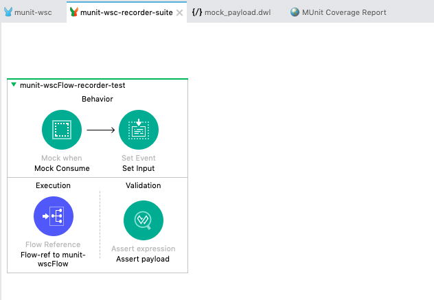
学習内容
- MUnit Test Recorder を利用してフローの実行を記録する方法
- 自動生成されたテストスイートをカスタマイズして自分のニーズに合わせる方法
必要条件
- Anypoint Studio 7.5.0 or later
- MUnit 2.2.5 or later
- MUnit Anypoint Studio Plugin 2.5.0 or later
- Mule Runtime Engine 4.3.0 or later
(前のラボが完了していて、munit-wscプロジェクトが設置されている場合は、このセクションをスキップすることができます。)
Anypoint Studioの起動
Anypoint Studioを開き、前のラボで使用したワークスペースを指定します。
テストのためにMuleプロジェクトを開く
パッケージ・エクスプローラーで、前のラボで作成したプロジェクトを探します。プロジェクトが閉じている場合は、プロジェクトを右クリックしてOpenProjectを選択します。
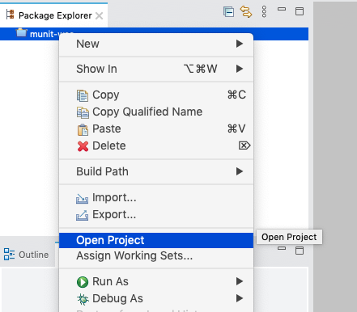
src/main/muleの下にあるmunit-wsc.xmlをダブルクリックして、キャンバスを開きます。
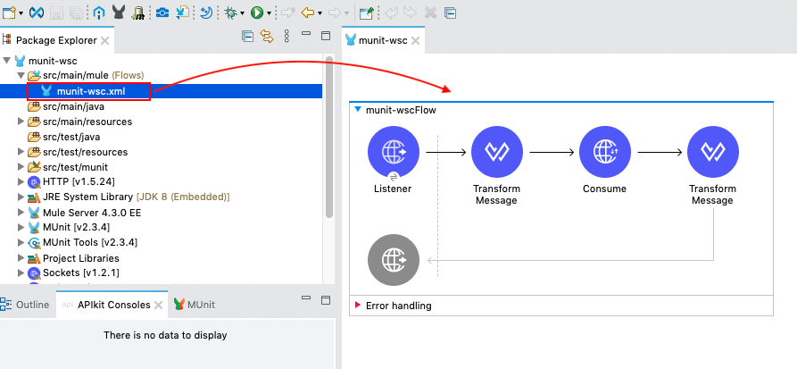
(オプション)アプリが正常に動作することを確認する
キャンバスを右クリックし、Run project munit-wscを選択します。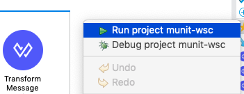
アプリケーションがローカルマシンにデプロイされるまで待ちます。

ブラウザを開き、URLバーにhttp://localhost:8081/calcと入力します。
APIが10＋20が30という結果を返すことを確認してください。

terminateボタンを押して、アプリケーションを停止します。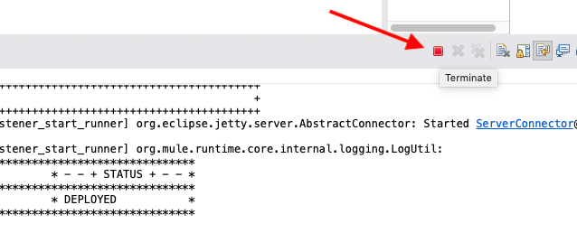
対象となるフローで Test Recorder を起動します。
munit-wscFlowを右クリックし、MUnit > Record test for this flowを選択する。
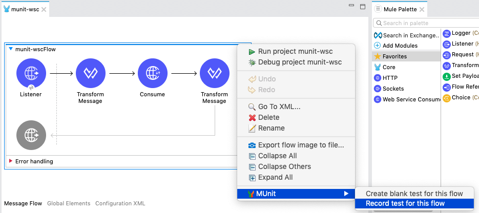
テストレコーダーが待機状態になるまで待ちます。
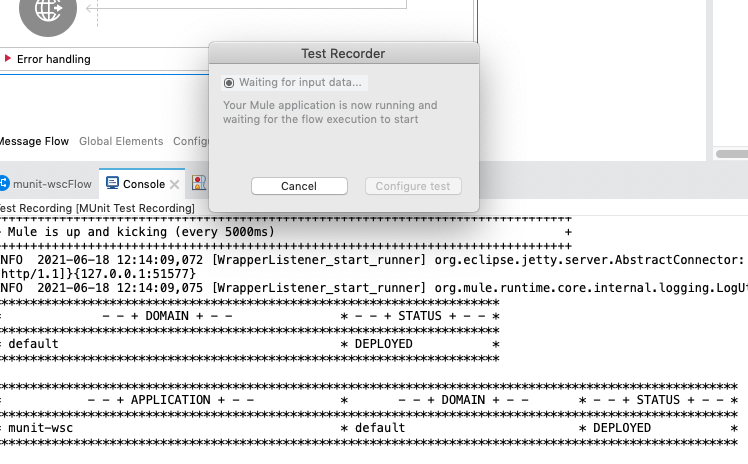
Muleアプリケーションを実行してテストする
ブラウザを開き、URLバーにhttp://localhost:8081/calcと入力します。
APIが10＋20が30という結果を返すことを確認します。
テストレコーダーのウィンドウで、Configure testボタンが有効になることを確認ください。
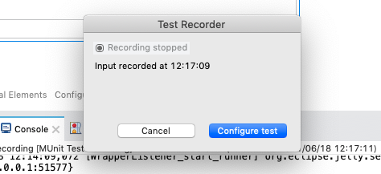
ウェブアプリのマニフェストの作成
Configure test ボタンをクリック
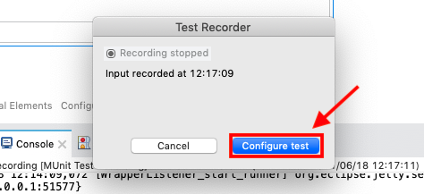
ファイル名とテスト名の中にrecorderを入れて、わかりやすいテスト名を指定します。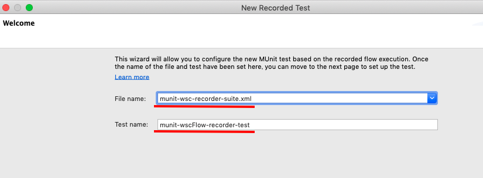
Next ボタンをクリック
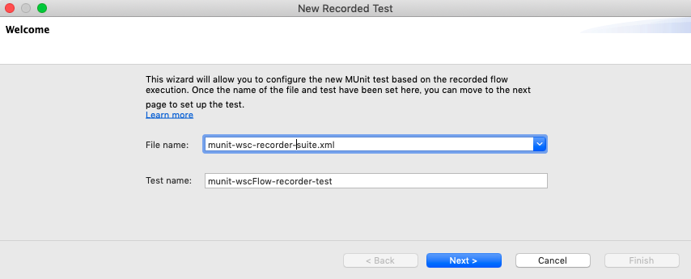
ここでは、前のラボで実施したように、実際にWSを利用するのではなく、SOAP WSの呼び出しをモックにしてみましょう。
Consume operation を選択します。
Mock this processor を選択します。
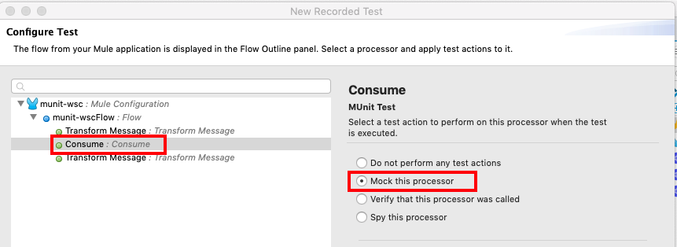
Mockセクションでは、このモックがどのような値を返すかを確認します。Payload > body を展開すると、AddResult フィールドに 30 が返されていることがわかります。
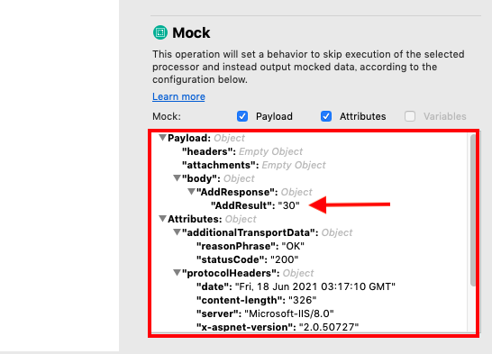
Next ボタンをクリック
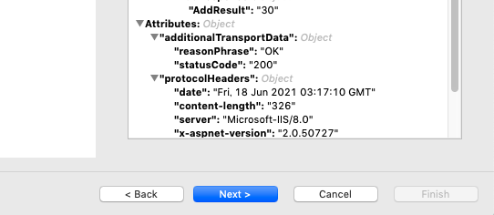
Finish ボタンをクリック
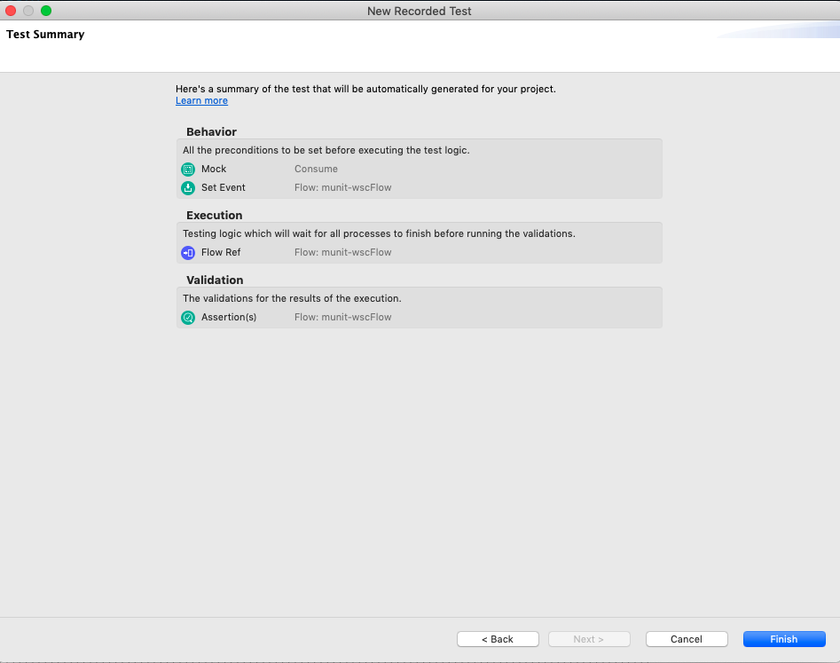
テストスイートは、あなたの設定に基づいて自動的に実行されていることがわかります。
Mock Consumeを選択してPayloadセクションを見ると、munitwscFlowrecordertestフォルダにあるmock_payload.dwlがモックに使用されていることがわかります。
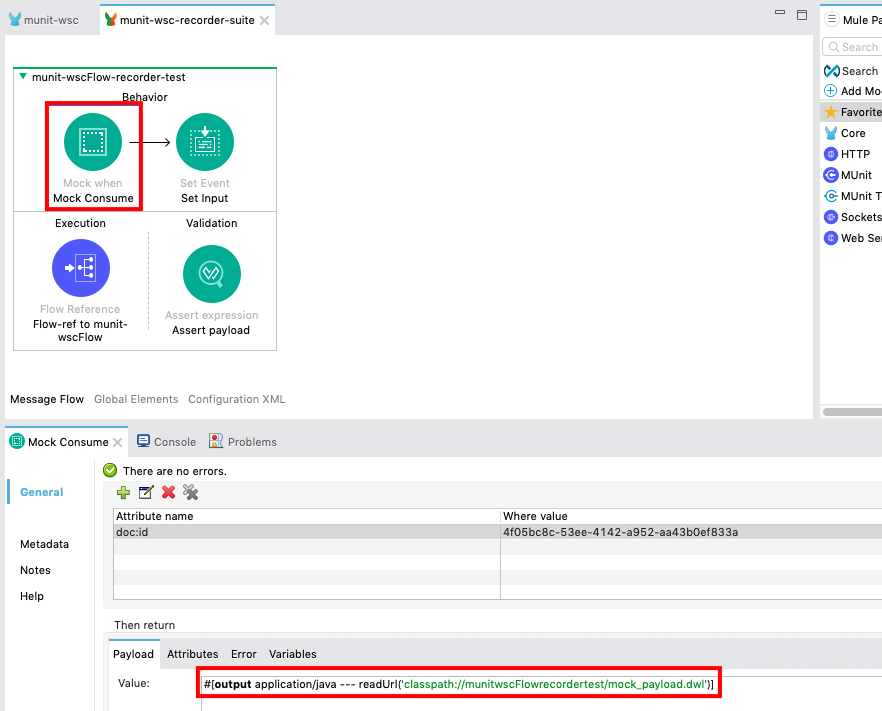
ファイルを開いてみると、設定されたモックデータが返ってくるようになっています。
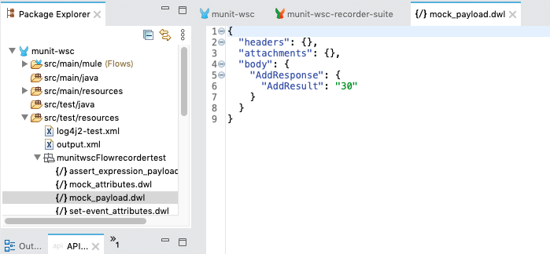
テストスイートの実行
munit-wsc-recorder-suiteのキャンバス上で右クリックし、Run MUnit Suiteを選択します。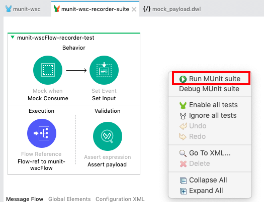
すべてが正しく実行されると、コンソールにテストが正常に実行されたことが表示されます。
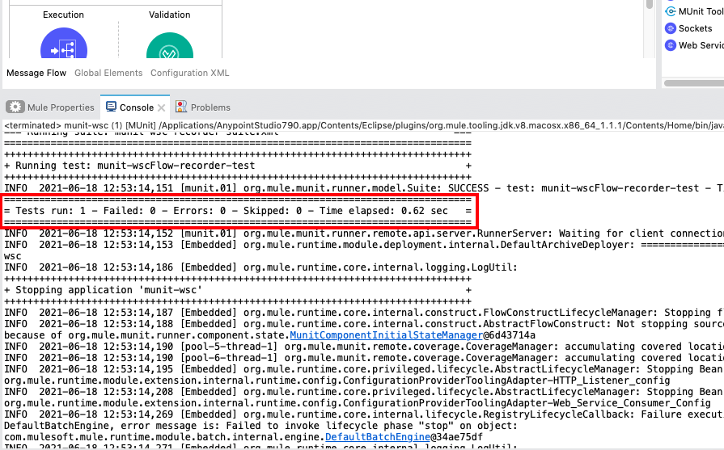
テストの結果は、左下の MUnit ビューにも表示されます。
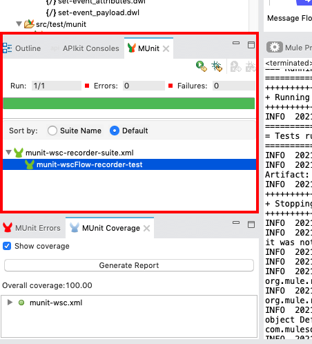
前のラボで行ったように、カバレッジレポートを見ることができます。
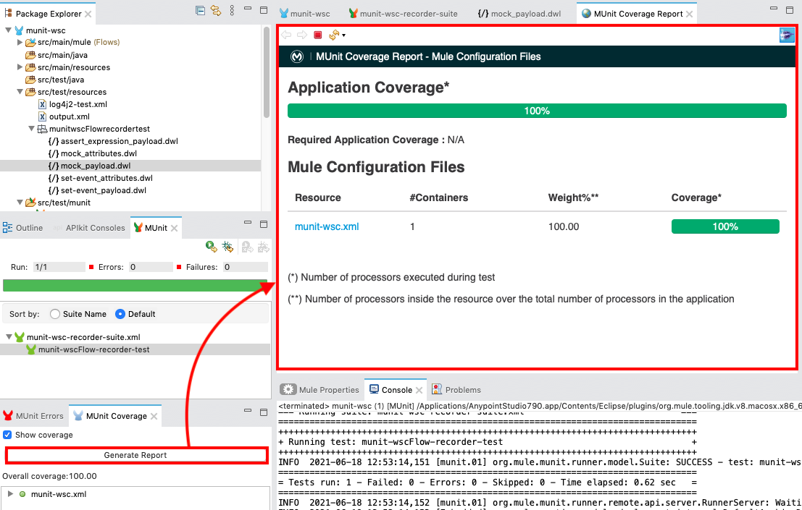
合格したオペレーションには緑のチェックマークがつきます。
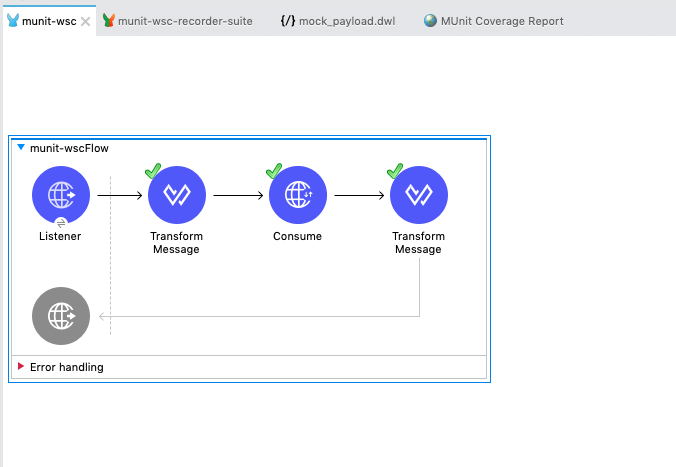
プロジェクトで利用可能なすべてのテスト・スイートの実行
Mule プロジェクトで利用可能なすべてのテスト・スイートを一度に実行することができます。
Package Explorerでプロジェクトを右クリックし、MUnit > Run Testsを選択してください。
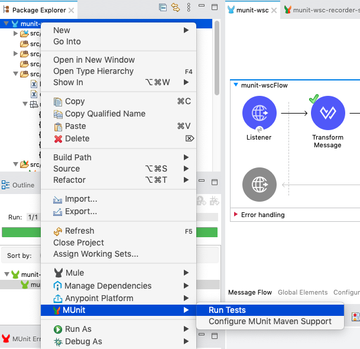
You'll see the test suite you configured in the previous lab and the one generated in this lab are executed.
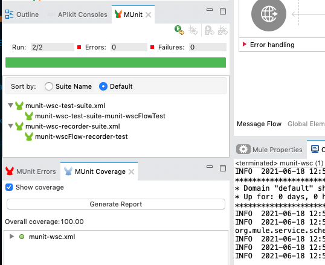
おめでとうございます。MUnit ツールでテストケースを開発することなく、MUnit テストスイートを構築することに成功しました。
実際のシナリオでは、もっと多くのテストケースが必要になります。自動生成されたテストケースをテンプレートとして利用し、それをフォークすることで、テストケースを一から作らなくても済むようになり、時間を節約することができます。
次は?
コードラボの一部をご紹介します...
- TBD